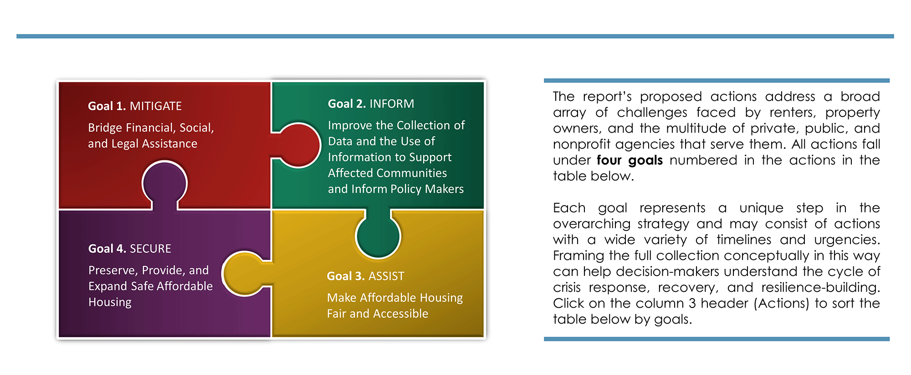
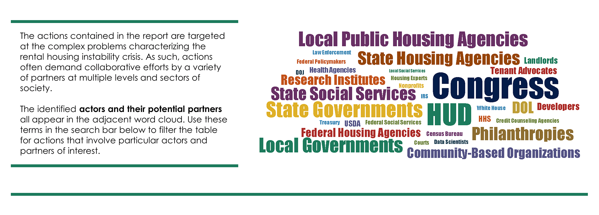

Preventing the wave of evictions likely to occur when U.S. state and federal moratoria are lifted will be a key component of recovering as a nation from the economic and health impacts of the COVID-19 pandemic. Actionable guidance is urgently needed on how to ensure that renters can stay in their homes and housing aid reaches the communities that need it the most.
In response to this need, the National Academies’ Response and Resilient Recovery Strategic Science Initiative (R³SSI) convened a strategy group to generate key recommendations via a scenario planning process. The resulting report, Rental Eviction and the COVID-19 Pandemic: Averting a Looming Crisis, applies R³SSI’s mission – protecting critical societal functions, bringing to bear the resources and partners necessary to solve complex problems, and building permanent security and system resilience for the future – to the rental housing instability crisis.
This page provides a sortable and searchable interface for key stakeholders to extract, engage with, and interpret the report’s content quickly and directly. The table contains abbreviated text and is only for reference, so be sure to refer to the FULL REPORT for the complete recommendations and study process.
 Click on table headers to sort alphabetically by column
| CATEGORY | TIME FRAME | ACTION | ACTOR | PARTNERS |
|---|---|---|---|---|
| 1: Immediate, emergency assistance | NEAR | 1A-1: Establish a national task force to prevent eviction and mitigate its effects during the pandemic and beyond. | Executive Office of the President | key state and federal agencies that administer and coordinate major social programs |
| 3: Providing assistance and support to landlords | NEAR | 1A-3: Provide landlords with information on tenant assistance programs. | Local PHAs, state housing agencies, local governments | Landlord associations |
| 3: Providing assistance and support to landlords | NEAR | 1B-1: Provide support to CBOs to establish automatic processes for tenant legal assistance | State governments and local governments | In consultation with landlords and in support of CBOs |
| 1: Immediate, emergency assistance | NEAR | 1B-2: Partner to connect with BIPOC, immigrants, and refugees that may not be covered by public assistance programs, as well as people living with disabilities and historically marginalized communities. | State governments and local governments | CBOs |
| 4: Capturing and building in existing pandemic-response efforts for the longer term | NEAR | 1C-6: Consider policy options to connect unemployment insurance and SNAP beneficiaries with WIOA and WPA services. | Congress | |
| 5: Setting research priorities and new partnerships to inform long term improvements | NEAR | 2A-2: Establish a federal reporting standard and online reporting portal for evictions data. | HUD | PHAs, local and state governments, landlords and their legal reps, sheriff's departments and law enforcement agencies, state and local courts |
| 1: Immediate, emergency assistance | NEAR | 2B-2: Publish guidelines on when short-term COVID-19 protections like eviction moratoriums can be lifted based on local health metrics and employment statistics. | HUD, HHS, USDOL | Health care nonprofits, housing services, health care companies, and state health care and social service agencies |
| 1: Immediate, emergency assistance | NEAR | 3A-1: Increase the number of HCV to guarantee that households with incomes below 50 percent of the area median receive housing assistance during the pandemic. | Congress and HUD | local public housing agencies |
| 6: Legislative and regulatory changes needed to build a more resilient system for future crisis | SHORT | 3B-2: Implement HUD’s Small Area Fair Market Rents to allow the use of HCVs throughout metropolitan areas. | Congress, HUD, and state housing agencies | PHAs, property owners, and landlord associations |
| 1: Immediate, emergency assistance | SHORT | 1A-2: Use current administrative infrastructures to allocate emergency rental assistance toward tenant arrears. |
State and federal social service administrators | Landlords |
| 1: Immediate, emergency assistance | SHORT | 1A-5: Distribute federal relief funds to legal aid programs for tenant assistance. | HUD | DOJ |
| 4: Capturing and building in existing pandemic-response efforts for the longer term | SHORT | 1C-1: Extend federally-funded support of unemployment insurance and SNAP programs, contingent on state-by-state economic improvement. | Congress | State public health agencies |
| 2: Getting people back to work and stabilizing incomes | SHORT | 1C-3: Extend eligibility of unemployment insurance to workers traditionally uncovered. | Congress | USDOL and state governments |
| 2: Getting people back to work and stabilizing incomes | SHORT | 1C-5: Reauthorize the WIOA and increase funding for WPA- authorized job search programs. | Congress | |
| 5: Setting research priorities and new partnerships to inform long term improvements | SHORT | 2A-1: Establish a temporary Eviction Data Collection Assistance Program, to assess data needs and modernize electronic filing systems. | Congress | HUD, Census Bureau, housing experts |
| 5: Setting research priorities and new partnerships to inform long term improvements | SHORT | 2A-3: Launch and coordinate a comprehensive quantitative research program on evictions and housing instability. | HUD | Research institutes, Census Bureau, philanthropies, landlords and property managers, nonprofits, CBOs |
| 5: Setting research priorities and new partnerships to inform long term improvements | SHORT | 2A-4: Launch and coordinate a comprehensive qualitative research program on evictions and housing instability. | HUD | CBOs, PHAs, philanthropies, research institutes |
| 5: Setting research priorities and new partnerships to inform long term improvements | SHORT | 2B-1: Fund research to compile strategies and ordinances to mitigate the risk of COVID-19 in housing unstable populations. | HUD, and HHS (CDC) | State health care agencies and health care companies |
| 5: Setting research priorities and new partnerships to inform long term improvements | SHORT | 2C-3: Create interdisciplinary research agendas for the evaluation of health, social and economic interventions used to reduce housing instability during crises that reflects the diversity and lived experiences of the most affected communities. | Research institutes funded by philanthropies and state and federal housing agencies | tenant advocates and rental property developers, investors, and operators |
| 5: Setting research priorities and new partnerships to inform long term improvements | SHORT | 2C-4: Support efforts to collect the evidence needed to fill gaps in knowledge about differential outcomes of eviction by race and ethnicity. | Research institutes funded by philanthropies and state and federal housing agencies | tenant advocates and rental property developers, investors, and operators |
| 4: Capturing and building in existing pandemic-response efforts for the longer term | SHORT | 3A-2: Permanently increase the number of HCVs after the pandemic to guarantee households with incomes below 50 percent of the area median receive housing assistance. | Congress and HUD | local public housing agencies |
| 3: Providing assistance and support to landlords | SHORT | 3B-1: Expand HCV program to include robust housing counseling to both tenants and landlords to improve uptake. | Congress, HUD, and state housing agencies | PHAs, property owners, and landlord associations |
| 3: Providing assistance and support to landlords | SHORT | 3B-3: Implement landlord recruitment and retention strategies to increase the number of housing units that accept HCV by education, incentives, and reducing administrative burdens. | HUD and state housing agencies | property owners and landlord associations |
| 6: Legislative and regulatory changes needed to build a more resilient system for future crisis | SHORT | 3C-1: Amend the Fair Housing Act to include discrimination based on source of income as a prohibited factor in rental screening and the ECOA to include rental agreements as credit transactions. | Congress | |
| 6: Legislative and regulatory changes needed to build a more resilient system for future crisis | SHORT | 3C-2: Amend federal fair housing laws to create a path to prosecution for landlords who abuse the eviction process. | Congress | |
| 6: Legislative and regulatory changes needed to build a more resilient system for future crisis | SHORT | 3C-3: Increase the internal resources to enforce federal fair housing laws that support localities in providing legal assistance and protection for tenants. | Congress | |
| 5: Setting research priorities and new partnerships to inform long term improvements | SHORT | 3D-1: Establish a program under HUD to provide free credit counseling for renters in utility or housing arrears who apply for rental assistance. | Congress and HUD | |
| 6: Legislative and regulatory changes needed to build a more resilient system for future crisis | SHORT | 3D-2: Integrate free credit counseling services with application to unemployment insurance benefits or housing assistance benefits. | HUD, DOL, HHS, USDA | credit counseling agencies and state and local social service administrators |
| 3: Providing assistance and support to landlords | SHORT | 4B-1: Expand Treasury’s CDFI Fund, HUD’s HOME Investments Partnership Program, the National Housing Trust Fund, and for nonprofit housing developers, to develop and invest in affordable housing. |
Congress, Treasury, and HUD | |
| 5: Setting research priorities and new partnerships to inform long term improvements | SHORT | 4B-2: Fund academic or other research institutions to study the CMF to understand its impacts. | Philanthropies | |
| 6: Legislative and regulatory changes needed to build a more resilient system for future crisis | SHORT | 4C-3: Encourage governors, mayors, and city councils to continue working to eliminate exclusionary land-use regulations. | State governments and local governments | |
| 2: Getting people back to work and stabilizing incomes | MEDIUM | 1A-4: Develop web-based tools and provide technical support for individuals seeking social services to better connect to benefits | HUD | |
| 6: Legislative and regulatory changes needed to build a more resilient system for future crisis | MEDIUM | 1C-2: Comprehensively reform unemployment insurance to increase accessibility and benefits. | Congress | DOL and state governments |
| 4: Capturing and building in existing pandemic-response efforts for the longer term | MEDIUM | 1C-4: Modernize SNAP by updating the Thrifty Food Plan. | USDA Food and Nutrition Service | |
| 6: Legislative and regulatory changes needed to build a more resilient system for future crisis | MEDIUM | 1C-7: Use the infrastructure in Action 1A-1 and the dashboard in 2A-5 to integrate unemployment insurance with other social insurance programs like SNAP and housing assistance. | USDOL | State social service and labor agencies |
| 4: Capturing and building in existing pandemic-response efforts for the longer term | MEDIUM | 1C-8: Improve infrastructure for bridging services and delivering payments to households to mitigate economic damage in future crises. | DOL, USDA, HUD, IRS, and state governments |
|
| 4: Capturing and building in existing pandemic-response efforts for the longer term | MEDIUM | 2A-5: Build a publicly accessible National Housing Security Dashboard, combining information sought in 2A-1, 2A-2, 2A-3, and 2A-4 into a usable online interface. | HUD | Data scientists from the private, academic, and nonprofit sectors |
| 5: Setting research priorities and new partnerships to inform long term improvements | MEDIUM | 2C-1: Perform a gap analysis of all programs that provide housing support to identify needs, overlaps, inefficiencies, and gaps in outreach during the pandemic and other crises. | Research institutes funded by philanthropies and state and federal housing agencies | tenant advocates and rental property developers, investors, and operators |
| 5: Setting research priorities and new partnerships to inform long term improvements | MEDIUM | 2C-2: Use the data available on the proposed eviction dashboard (see Action 2A) to develop metrics for the evaluation of housing support programs for both tenants and property owners (in support of 2A-4). | Research institutes funded by philanthropies and state and federal housing agencies | tenant advocates and rental property developers, investors, and operators |
| 6: Legislative and regulatory changes needed to build a more resilient system for future crisis | MEDIUM | 4A-1: Extend and improve LIHTC program to ensure that LIHTC units are prioritized and subsidized for the lowest- income individuals and families | Congress | |
| 6: Legislative and regulatory changes needed to build a more resilient system for future crisis | MEDIUM | 4A-2: Ensure that the LIHTC expands recapitalization and preservation of existing affordable housing nearing the end of compliance periods. | Federal policymakers | |
| 6: Legislative and regulatory changes needed to build a more resilient system for future crisis | MEDIUM | 4A-3: Prioritize preservation in LIHTC Qualified Allocation Plans. | State governments | |
| 6: Legislative and regulatory changes needed to build a more resilient system for future crisis | MEDIUM | 4A-4: Continue and increase funding for the National Housing Trust Fund that supports low income residents. | Congress | |
| 6: Legislative and regulatory changes needed to build a more resilient system for future crisis | MEDIUM | 4A-5: Expand the RAD program to allow more public housing to shift to more sustainable Section 8 PBV and PERA platforms without displacing families. | HUD | |
| 3: Providing assistance and support to landlords | MEDIUM | 4A-6: Incentivize rental management companies to invest private capital to preserve LIHTC, Housing Assistance Payment (HAP) Section 8 properties, and NOAH properties. | State and local housing authorities | Rental management companies |
| 5: Setting research priorities and new partnerships to inform long term improvements | MEDIUM | 4A-7: Identify at-risk properties and provide resources to rehabilitate and/or purchase them. | Local governments | PHAs and nonprofit housing organizations |
| 5: Setting research priorities and new partnerships to inform long term improvements | MEDIUM | 4A-8: Increase funding for housing partnership networks that enable community-oriented financing, scaled for the number of rental units needed. | Federal governments, local governments and state governments | philanthropies |
| 3: Providing assistance and support to landlords | MEDIUM | 4B-3: Initiate programs to close credit gaps and create financial incentives for developers to build or rehabilitate affordable housing. | HUD | Community investment organizations |
| 6: Legislative and regulatory changes needed to build a more resilient system for future crisis | MEDIUM | 4C-1: Require that to receive competitive funding for housing, states and local governments should demonstrate measurable progress toward meeting regional housing needs and distributing affordable housing across a diverse range of communities. | Federal governments, state governments and local governments | |
| 6: Legislative and regulatory changes needed to build a more resilient system for future crisis | MEDIUM | 4C-2: Create local incentives, combined with inclusionary zoning mandates where possible, to increase the affordable housing supply. | Local governments | |
| 6: Legislative and regulatory changes needed to build a more resilient system for future crisis | MEDIUM | 4C-4: Continue enforcing existing fair housing legislation | HUD and DOJ | |